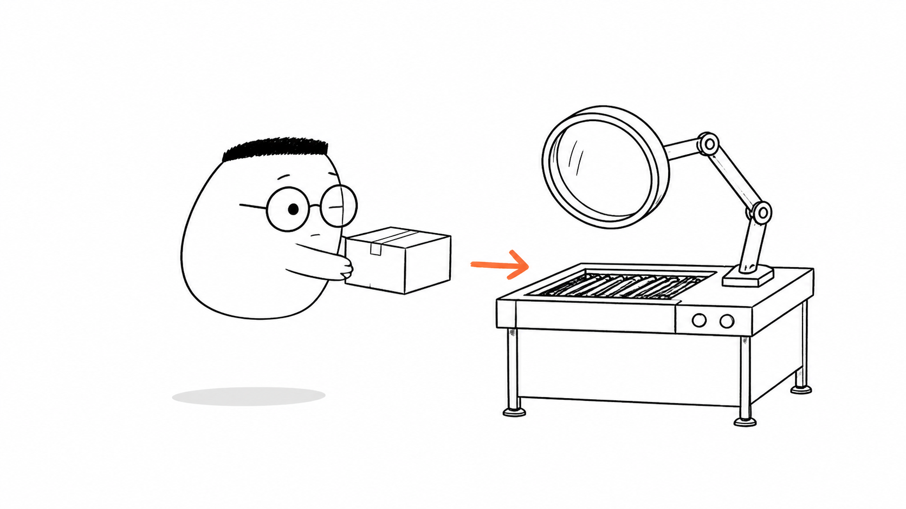
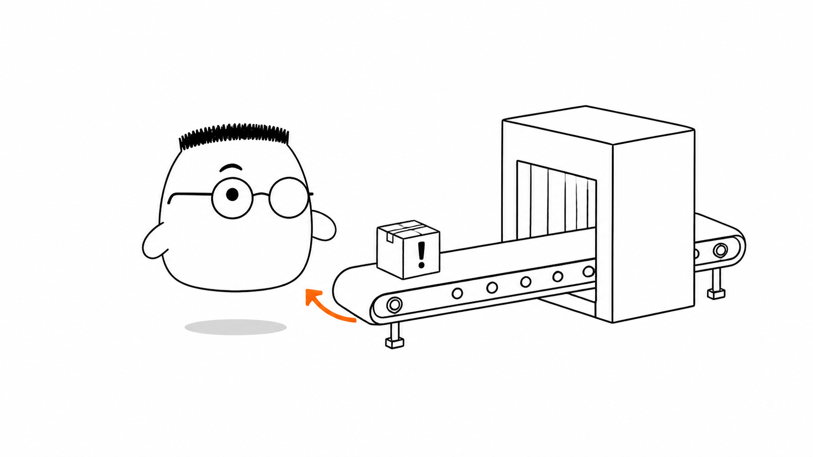
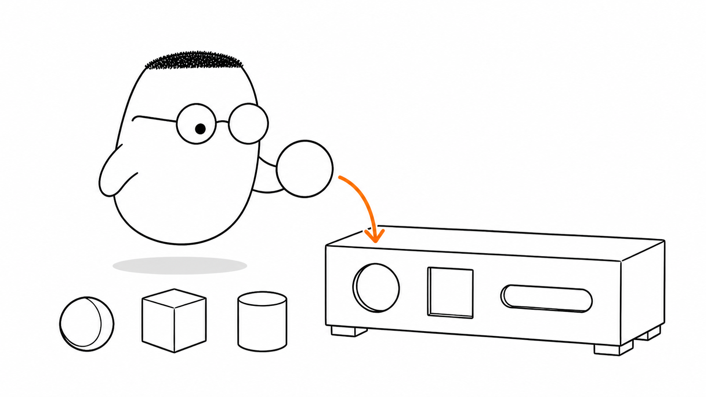
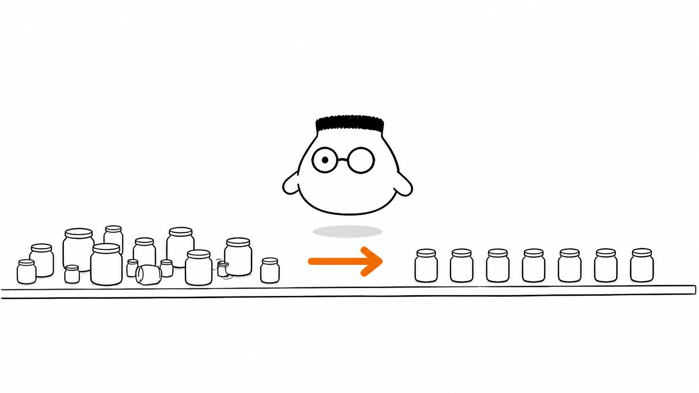

Masalah sehari-hari
Paket yang masuk ke gudang tidak selalu benar. Label bisa kabur. Isi bisa tidak sesuai. Ada juga paket yang tampak rapi, tetapi jumlah barangnya tidak masuk akal. Validasi memeriksa semua itu sebelum data dipakai oleh sistem.
Analogi Kuka
Kuka menyerahkan satu paket kepada petugas pemeriksa di pintu gudang. Petugas melihat bentuk paket, mencocokkan labelnya, lalu membaca isi yang dilaporkan.
Jika paket bermasalah, petugas mengirimnya kembali kepada Kuka dengan alasan yang jelas. Jika paket lolos, petugas merapikan label dan kemasannya sebelum menyerahkannya ke rak.
Peta sederhananya
Paket adalah data dari request. Petugas adalah pemeriksa di pintu. Barisan meja pemeriksa adalah pipeline. Rak adalah service dan database. Pemeriksaan bentuk, label, dan isi adalah validasi tipe, sintaksis, dan semantik.
Ilustrasi

Petugas tidak menunggu sampai paket berada di rak. Pemeriksaan dilakukan di pintu, saat kesalahan masih mudah dikembalikan dan belum mengganggu isi gudang.
Penjelasan konsep
Server menerima data dari luar. Data itu belum boleh dipercaya hanya karena datang dari halaman milik kita. Validasi menjaga agar data yang masuk memiliki bentuk, format, rentang, dan makna yang diharapkan.
Tanpa validasi, data buruk dapat berjalan terlalu jauh. Ia bisa melewati controller dan service, lalu gagal ketika database mencoba menyimpannya. Kesalahan yang seharusnya menjadi tanggung jawab pengirim berubah menjadi masalah di dalam server.
Bayangkan Kuka mengirim paket dengan label umur bernilai minus. Petugas yang teliti mengirimnya kembali dengan 400. Kode itu berarti request perlu diperbaiki. Sebaliknya, jika mesin gudang sendiri rusak dan raknya jebol, server mengirim 500. Itu kesalahan internal.

Perbedaan 400 dan 500 penting. Kuka mendapat petunjuk untuk memperbaiki paket pada kasus pertama. Tim pemilik gudang mendapat sinyal untuk mencari kerusakan sistem pada kasus kedua.
Validasi tipe memeriksa bentuk nilai. Angka harus datang sebagai angka. Teks harus datang sebagai teks. Larik harus datang sebagai larik. Kuka tidak bisa mengisi celah bundar dengan paket kotak.

Setelah tipe benar, pemeriksaan bisa melihat aturan lain. Validasi sintaksis memeriksa format, seperti email yang memiliki tanda @. Validasi semantik memeriksa makna, seperti umur yang tidak boleh minus atau tanggal pulang yang tidak boleh mendahului tanggal datang.
Urutannya membantu petugas memberi pesan yang tepat. Jangan memeriksa arti angka sebelum memastikan nilai itu memang angka. Setiap meja dalam pipeline mengerjakan satu tugas, lalu meneruskan paket yang lolos.
Validasi kompleks atau dependen
Aturan dependen melihat hubungan antarfield. Kupon bisa sah hanya jika request juga memiliki belanjaan. Satu field tidak selalu cukup untuk menentukan validitas field lain.
Transformasi sebagai type casting
Type casting mengubah bentuk nilai yang akan dipakai, seperti mengubah teks "12" menjadi angka 12. Isi yang dimaksud tetap sama, tetapi kemasannya cocok untuk meja berikutnya.
Transformasi sebagai normalisasi
Normalisasi merapikan data ke bentuk yang seragam. Spasi berlebih dapat dibuang, huruf dapat dibuat kecil, dan format nomor dapat disamakan sebelum data disimpan.

Satu pipeline gabungan
Validasi dan transformasi dapat menjadi satu barisan. Petugas memeriksa paket dari kiri ke kanan, lalu merapikannya hanya setelah semua aturan penting terpenuhi.
Frontend vs backend
Frontend dapat memberi bantuan awal agar pengguna cepat melihat kesalahan. Backend tetap menjadi penjaga terakhir karena request bisa datang dari mana saja. Pemeriksaan di frontend tidak menggantikan pemeriksaan di backend.
Diagram alur
Request masuk lewat pintu pemeriksaan. Tipe, format, dan makna dicek berurutan. Jika lolos, data ditransformasi dan dinormalisasi sebelum handler bekerja. Jika gagal, server mengirim 400.
Contoh mini
Percobaan 1 POST /paket umur: -2 400 Bad Request Percobaan 2 POST /paket umur: 12 200 OK
Seperti kartu pos, percobaan pertama kembali kepada pengirim karena umur minus tidak masuk akal. Percobaan kedua lolos dan boleh diteruskan ke handler.
Ringkasan
- Validasi memeriksa data dari luar sebelum data menyentuh logika penting.
400menunjukkan request buruk dari pengirim.500menunjukkan masalah di dalam server.- Validasi tipe memeriksa bentuk nilai, sintaksis memeriksa format, dan semantik memeriksa makna.
- Pipeline menjalankan pemeriksaan dalam urutan yang jelas.
- Transformasi dan normalisasi menyiapkan data yang sudah lolos agar seragam untuk handler.
- Frontend membantu pengguna, tetapi backend tetap harus memeriksa ulang.
Pertanyaan pemahaman
- Kenapa server harus memeriksa request lagi padahal halaman frontend sudah memeriksa?
- Apa beda
400dan500, dan kenapa beda itu penting? - Apa beda cek bentuk atau tipe, cek format atau sintaksis, dan cek masuk akal atau semantik?
Mau lebih dalam
Versi teknis membahas tempat validasi bekerja, urutan pipeline, dan cara transformasi menjaga data tetap aman sebelum logika bisnis berjalan.